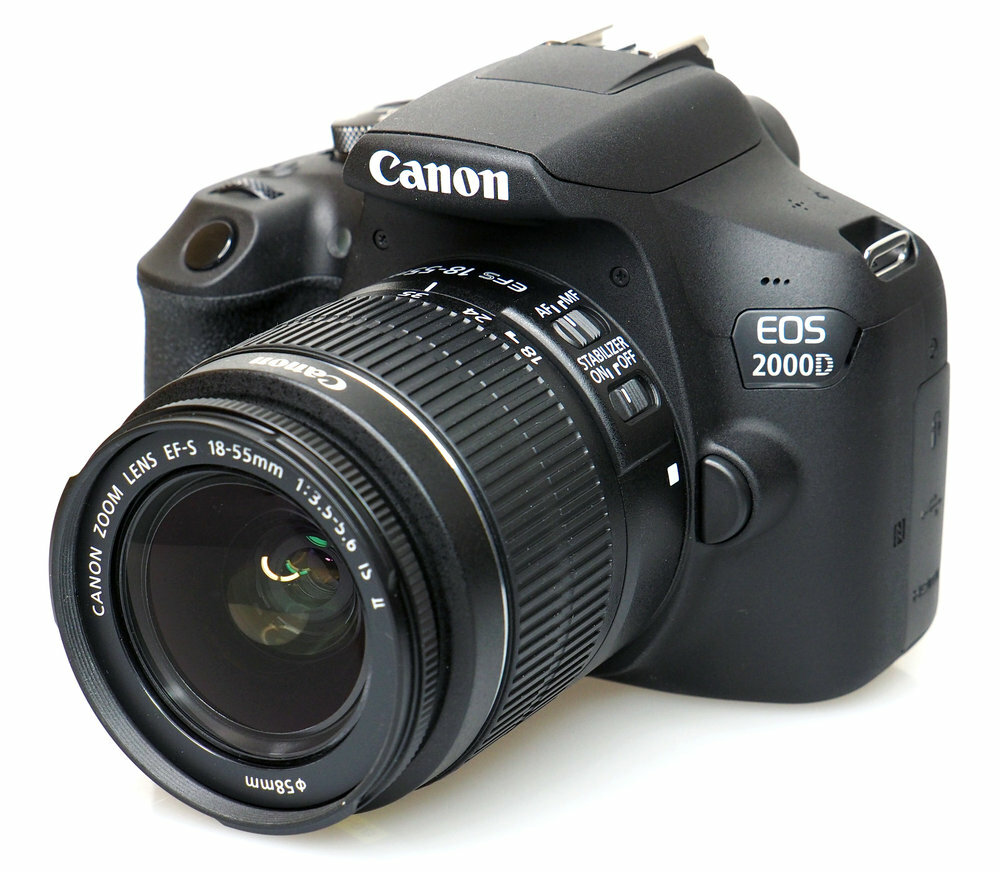

Фотография для меня — это способ заметить то, мимо чего обычно проходишь. Я только учусь, но уже понял: лучший кадр не тот, что построен, а тот, что поймал.
Снимаю на Canon EOS 2000D с объективом 18–55mm. Пробую себя везде: портреты, природа, животные. Макро пока не моё — но всё впереди.
Этот сайт — не портфолио и не работа. Это моё хобби, которым я делюсь с теми, кто рядом.